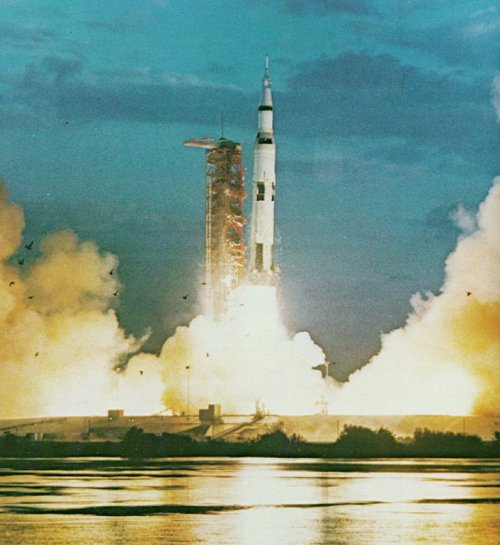

|  | Silhouetted by the glare of the first Saturn V launch, a flock of birds calmly conducts its dawn patrol of the lagoon. As the vehicle begins to clear the launch pad, several more seconds will pass before the crashing roar reaches the flock. This is Apollo 4, the first "all up" test of the launch vehicle and spacecraft, proving out their flight compatibility in an unmanned Earth-orbiting mission. |